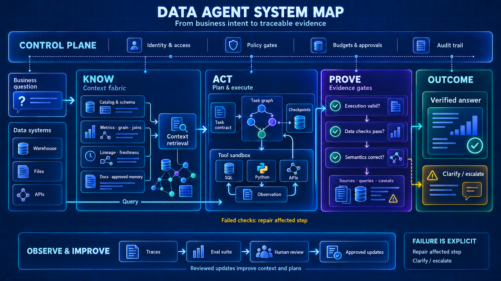

THE RESOURCE LIBRARY
找到你的下一个工程线索.
/
- 正在载入资料库…
START WITH A QUESTION
先选一个问题，再走一条路线.
01 / BUILD
搭一个真正能工作的分析 Agent
从中文实现出发，串起知识配置、SQL、Python 与报告交付。
Spring AI Alibaba · DB-GPT
02 / CONNECT把数据能力接入现有 Agent
沿 Skills、MCP 和云端授权，读懂工具接入与身份边界。
Data Agent Kit · dbt MCP
03 / GROUND让业务定义真正进入计算
比较语义建模、目录上下文、查询规划与证据对账。
WrenAI · DataHub · Semantic Layer
04 / VERIFY从一次演示走向可检查的交付
从实录与讲义提取检查项，看清失败、审批与验收条件。
公开分享 · Evals · 设计评审
ONE SYSTEM, FOUR QUESTIONS
知道什么，如何行动，怎样证明，由谁控制.

本仓编辑归纳的工程参考图。Verified 指通过所配置的检查并附有证据；证据不足时应澄清、修复或升级。